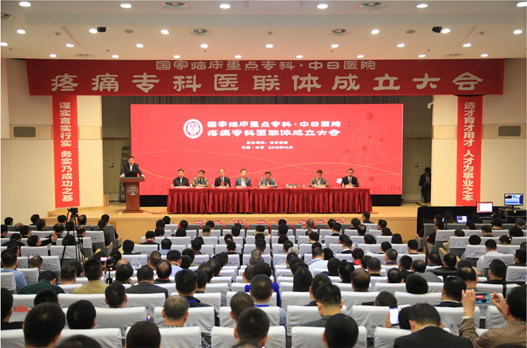

基于慢性疼痛疾病是我国常见、多发、重大疾病，疾病负担巨大，造成的社会损失难以估量的严峻现实，迫切需求构建国内疼痛专科医联体。中日医院疼痛科是我国首批建立的疼痛科，是目前国内公认的起步较早、治疗手段最全、培训疼痛人才最多的疼痛科。中日医院作为中国疼痛科的领头羊，在国家卫生计生委的支持下，由中日医院牵头，联合国内部分大型三甲医院协作，并与国内其他医疗单位共计400余家医院合作，共同组建“国家临床重点专科·中日医院疼痛专科医联体(Medical Cluster for Pain Disorders，MCPD)”，简称疼痛专科医联体。
充分发挥中日医院疼痛科及各协作单位的学科优势，与其他合作单位一起，围绕慢性疼痛的预防、诊疗、人才培养及临床研究。合作医疗机构与牵头单位中日医院之间将共同实施技术辐射和双向转诊。各级基层医院将作为成员单位，医联体将帮助它们解决专科医疗和学科建设问题，安排专科疾病患者就医，从而将有限的优质医疗资源集中在最需要的疑难危重症诊疗上。广泛开展业务合作，形成多方共赢的局面。

北京新云医院管理有限公司是新云医疗集团旗下的专业医院管理公司，是国家临床重点专科·中日医院疼痛专科医联体（简称“疼痛专科医联体”）运营方。
新云医疗愿为提升中国疼痛患者的生活品质这一伟大使命而不断努力。
公司名称：
北京新云医院管理有限公司
工作时间：
周一到周五 9:00-18:00
公司地址：
北京市昌平区回龙观东大街338号

扫码关注微信公众号
京石食药监械经营备20160135号
北京新云医疗科技有限公司
Copyright © 2016 - 2017 New Cloud. All Rights Reserved.